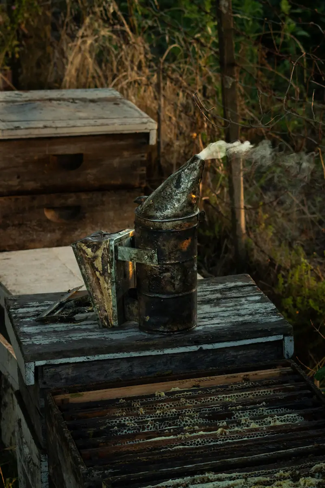

Beekeeping Equipment UK
Last updated: 1 May 2026
Having the right beekeeping equipment is key to maintaining healthy hives, harvesting honey safely, and managing your bees effectively throughout the year in the UK climate. Good kit does not have to be the most expensive, but it should be safe, practical and suited to how you keep bees.
Why quality beekeeping equipment matters
Whether you're starting your first hive or expanding an apiary, reliable equipment protects both you and your bees. Using proper tools improves safety, minimises stress on your colonies and makes it easier to carry out regular inspections, feeding and treatments described in the Year in the Apiary and hive management guide.
Checklist – What Equipment Do I Need to Start Beekeeping in the UK?

Before your first colony arrives you should aim to have the following basics in place:
- Hive and stand: A complete hive (floor, brood box, crown board, roof and frames) on a stable stand to keep it off the damp ground.
- Protective clothing: Bee suit or jacket with veil, plus suitable gloves and sturdy footwear.
- Smoker: To calm the bees by masking alarm pheromones during inspections.
- Hive tool: For prying apart boxes, loosening frames and scraping excess wax and propolis.
- Feeder and syrup container: To support the colony when nectar is short, particularly in early spring and late summer.
- Spare frames and foundation: So you can replace damaged comb and give the bees space to expand.
- Basic record-keeping: A notebook or digital system for inspections – you can later upgrade to tools like the HiveTag app once you want everything in one place.
Protective Clothing – Suit, Veil and Gloves
In the UK, weather can change quickly and colonies can vary in temperament from day to day. A good bee suit with integral veil gives you confidence to work calmly and methodically, which is better for both you and the bees.
- Bee suit or jacket: Choose light-coloured, breathable material with secure zips and elastic at wrists and ankles. Many UK beekeepers start with a full suit, then decide later whether a jacket is enough for them.
- Veil: Ensure the veil keeps mesh away from your face even when you lean forward. Check regularly for holes or worn seams.
- Gloves: Nitrile or thin leather gloves offer a balance between protection and dexterity. Some experienced beekeepers work with thinner gloves, but beginners should prioritise confidence and safety.
- Footwear: Wellies or boots that bees cannot easily climb into, with suit cuffs secured over the top.
For more on working safely around bees, see the guides to bee stings and reactions and beekeeping hygiene.
Hive Tools and Day-to-Day Equipment
Once your bees are installed, a small set of hand tools will be used every time you open the hive.
- Smoker: A robust smoker with heat guard and hook for resting on the hive. Use cool, natural fuels such as untreated hessian, cardboard egg boxes or dried grass rather than anything treated or plastic-based.
- Hive tool: One of the most-used items in any beekeeper's kit. Standard or J-type tools are both common in the UK – choose whichever feels comfortable in your hand.
- Bee brush: A soft-bristled brush or goose wing can be used to gently move bees off frames, supers or equipment without harming them.
- Frame grip: Optional but handy for lifting heavy frames from brood boxes or supers, especially when they're loaded with honey.
- Queen marking kit: As you become more confident, a queen marking cage and paint pen make it easier to find the queen during routine inspections.
Choosing the Right Hive in the UK
The most common hive types in the UK include the National, WBC and Langstroth hives. Each has pros and cons regarding size, insulation and how easy they are to move or split. For beginners, the National hive is a widely used, practical choice because local associations, equipment suppliers and fellow beekeepers are familiar with it.
Whatever hive you choose, aim for:
- Compatibility: Stick to one hive type at first so frames and parts are interchangeable.
- Weather protection: Good roofs, sound joints and a stand that keeps timber off wet ground are important in the UK's damp winters.
- Hygiene: Second-hand hives should only be used if they have been carefully checked and scorched or sterilised as appropriate. See the bee diseases overview and hygiene guide for more on reducing disease risk.
Honey Extraction Equipment
Harvesting honey is one of the most rewarding parts of beekeeping. Depending on how many hives you run and how much honey you expect, you can keep things simple or build up to a more complete extraction setup. More detail is given in the dedicated honey extraction guide.
- Uncapping knife or fork: Removes wax cappings from honeycomb before extraction. Heated knives can make the job easier, but simple serrated knives work well for small batches.
- Honey extractor: A manual or electric centrifuge that spins frames to extract honey without damaging the comb. Many beginners borrow an extractor from their local association before deciding whether to buy one.
- Strainer or sieve: Used to remove wax particles and debris from the extracted honey to ensure clarity.
- Settling tank: Allows air bubbles and fine particles to rise to the top before bottling the honey.
- Honey buckets and jars: Food-safe containers for storing and packaging your finished product. Make sure they can be sealed and labelled in line with UK regulations.
- Honey tap or gate: Attached to the settling tank or bucket for easy, controlled bottling.
Additional Beekeeping Supplies and "Nice-to-Haves"
- Queen excluder: A grid placed between the brood box and honey super to prevent the queen from laying eggs in honey frames.
- Feeder: Used to provide sugar syrup or supplements, especially during early spring or after a swarm. Contact feeders and rapid feeders are both commonly used in the UK.
- Bee escape: A device placed below the honey super to allow bees to exit but not re-enter, making harvesting easier.
- Hive stand or base: Elevates the hive to prevent damp, improve ventilation and deter pests like mice or ants.
- Spare brood box or nucleus hive: Very useful when performing artificial swarms, housing a spare queen or managing colonies during the main season.
Storage, Cleaning and Disease Prevention
Good equipment is only truly effective if it is looked after. Store suits, gloves and tools in a dry, safe location away from rodents and strong odours. Keep one area for clean kit and another for items used on suspect colonies.
Use separate or carefully cleaned tools for different apiaries to reduce the risk of spreading disease. Frames and boxes from colonies with suspected disease should be isolated and dealt with according to current UK guidance. Learn more in the beekeeping hygiene guide and the main bee diseases section.
Equipment – Frequently Asked Questions
At a minimum you will need a hive, a bee suit with veil, gloves, a smoker, a hive tool and a feeder. Most beginners in the UK also find a bee brush and a simple way of recording inspections very useful.
A full suit offers the most protection and peace of mind for new beekeepers. Some experienced beekeepers use just a jacket and thick clothing underneath, but most beginners in the UK are more confident in a full suit with built-in veil.
The National hive is the most widely used and supported hive type in the UK, making it a practical choice for beginners. Spares and second-hand parts are easy to find, and most local associations use them in training apiaries.
Protective clothing and tools can often be bought second-hand if they are in good condition, but hive parts and frames should only be bought used if you are confident they are disease-free.
Not always. Many beginners borrow an extractor from their local beekeeping association or share one with a friend.
Keep a charged mobile phone, basic first aid kit and any personal medication such as an adrenaline auto-injector if prescribed.
Hive tools can last many years if cleaned regularly. Gloves and suits should be replaced if damaged, difficult to clean or no longer protective.
Useful items include a mesh floor, inspection tray, magnifying lens, sample containers and disposable gloves.
Some beekeepers use paper hive records, while others use a digital app such as HiveTag to log inspections, equipment, tasks and costs.
Summary – Building Up Your Kit Over Time
Investing in the right beekeeping equipment makes every visit to the apiary calmer, safer and more productive. You do not need everything on day one: start with the essentials – hive, protective clothing, smoker, hive tool and feeder – and then build up items like extractors, spare boxes and specialist tools as your confidence and colony numbers grow.
When you are ready to keep better track of inspections, equipment and costs, consider moving your notes into the HiveTag members area so that hive records, tasks and expenses sit alongside the practical kit in your bee shed.